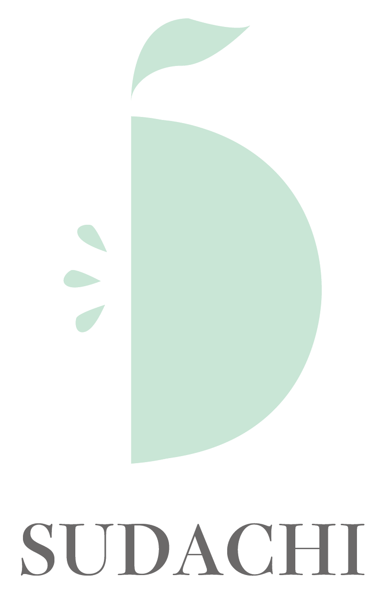
SUDACHI｜酢橘美容液のブランディング
リモートワークや日焼け、ダイエットなど日々の疲れで肌トラブルに悩む10代から50代の男女をターゲットにし、 「お疲れ素肌にご褒美を。」をコンセプトブランディング。
徳島県産の美肌成分が豊富の酢橘を使用した酢橘美容液「SUDACHI」。 幅広い年齢層や男女共に使えるよう白を基調に天然由来の美しさが感じられる シンプルさを大切に制作しました。
Role
- Logo Design
- Package Design
- Poster Design
- Message Card Design
- Website Design
Tools
- Illustrator
- Photoshop
Period
- 2022.08 – 2022.09
Category
- Branding
- Cosmetic Design
01
Package Design

02
Leaflet Design
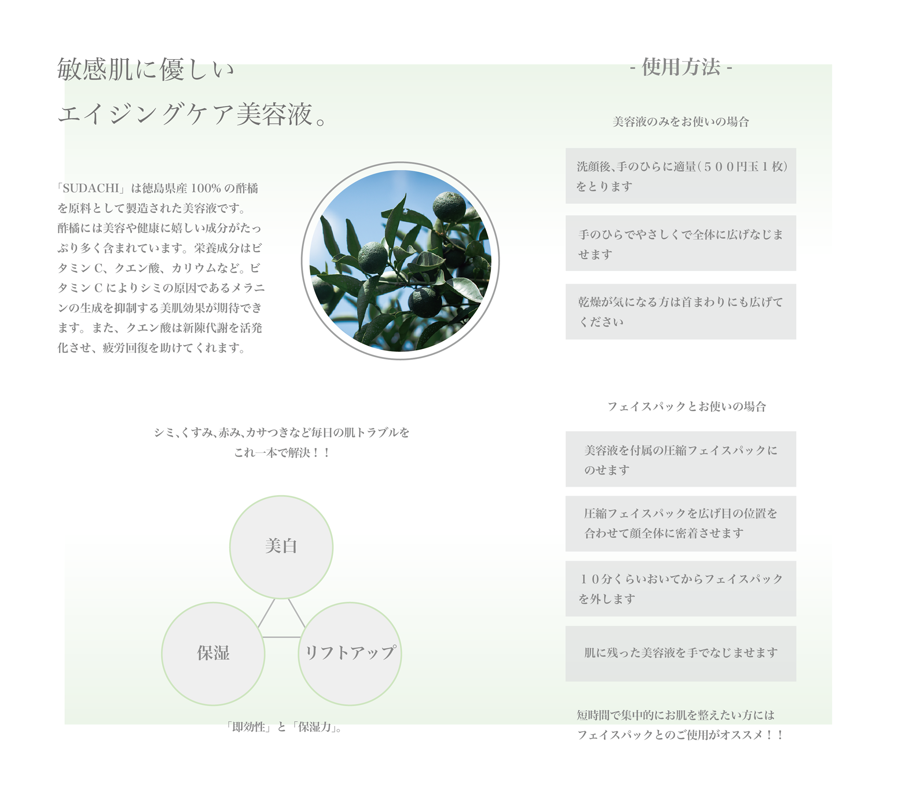
03
Message Card

04
Poster Design
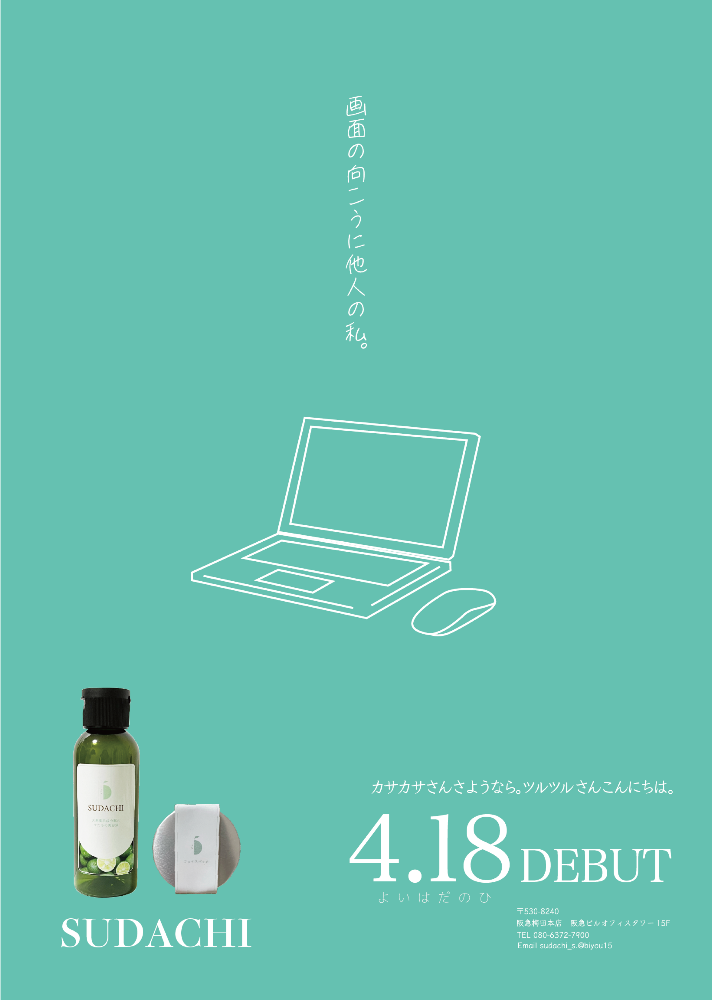
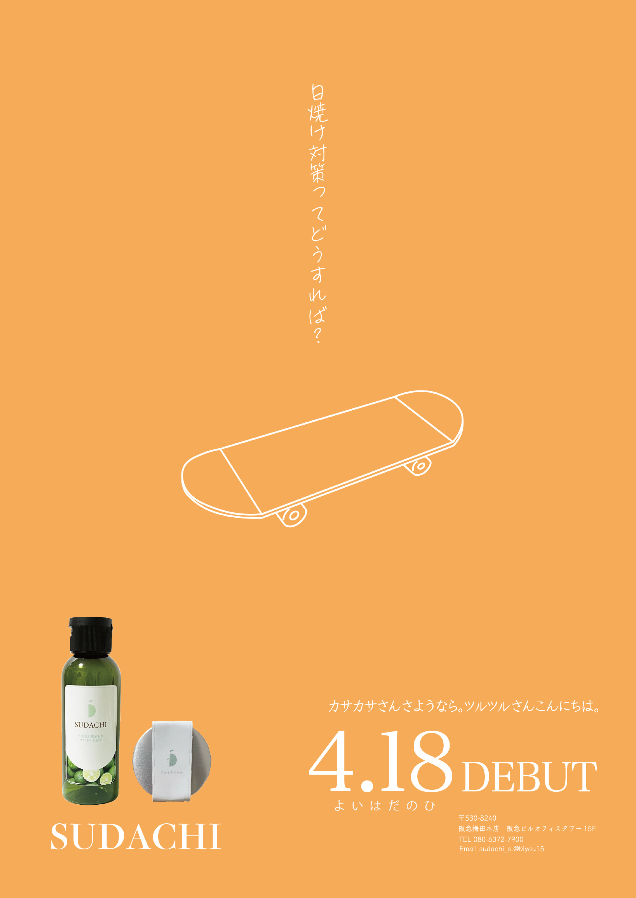
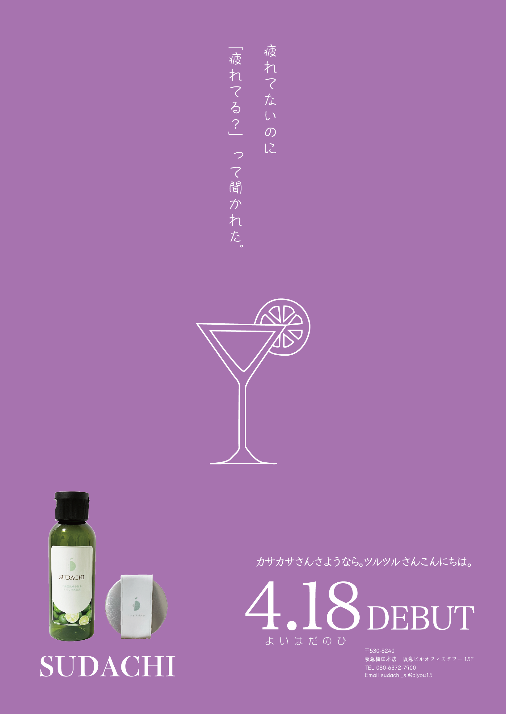
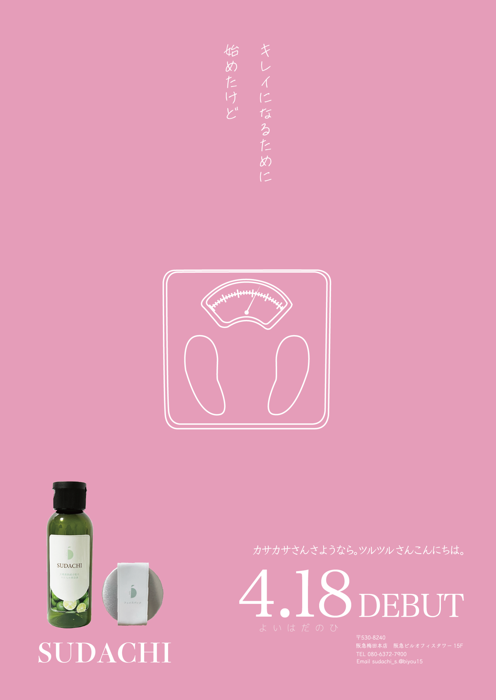
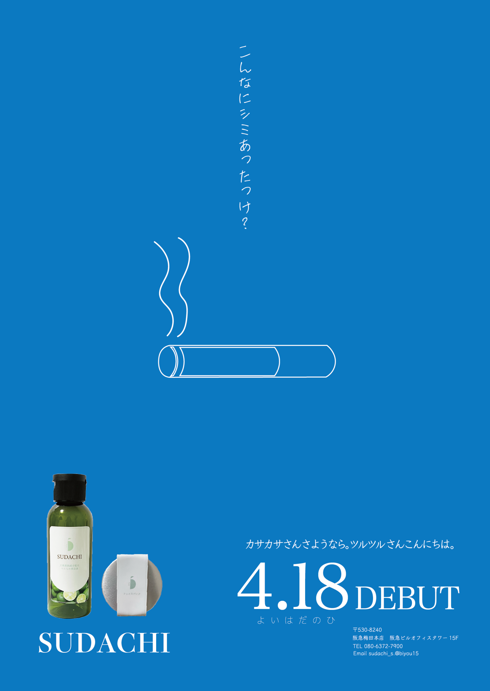
05
Poster Banner Design
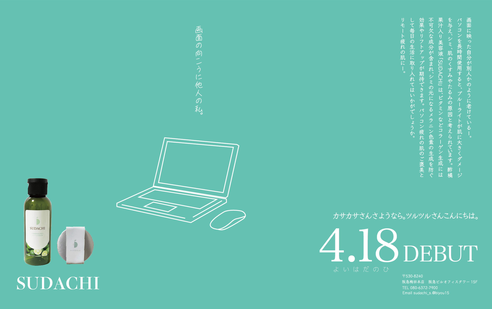
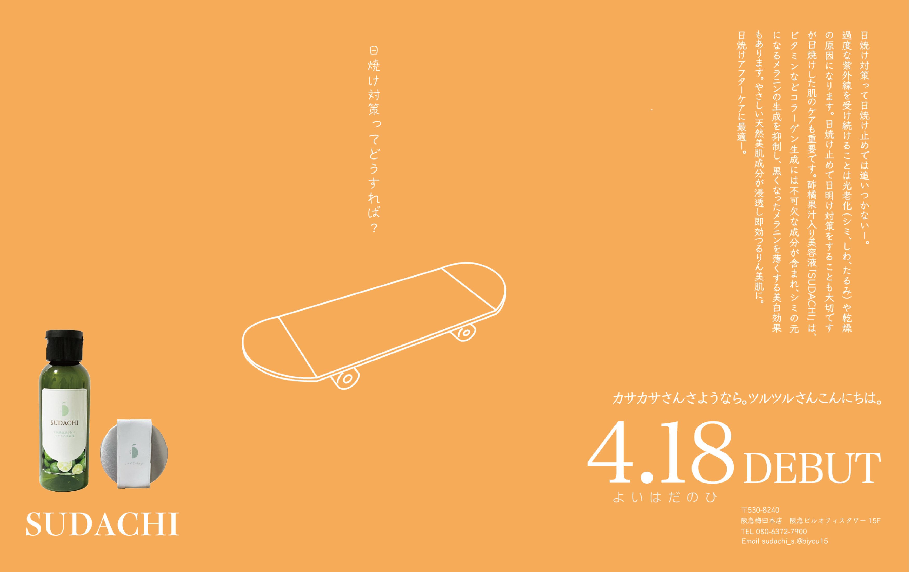
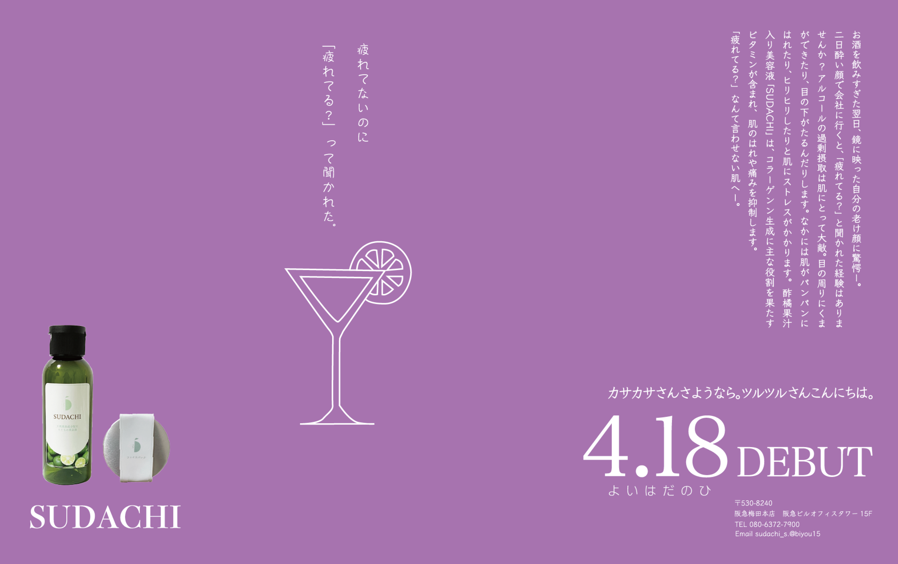
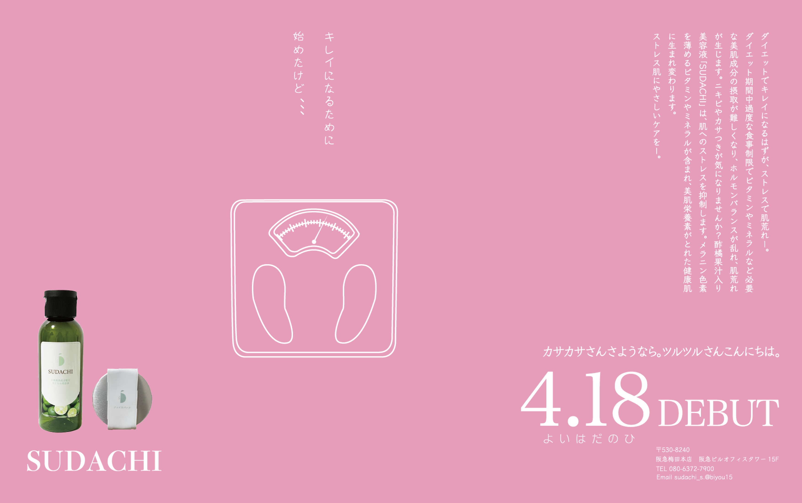
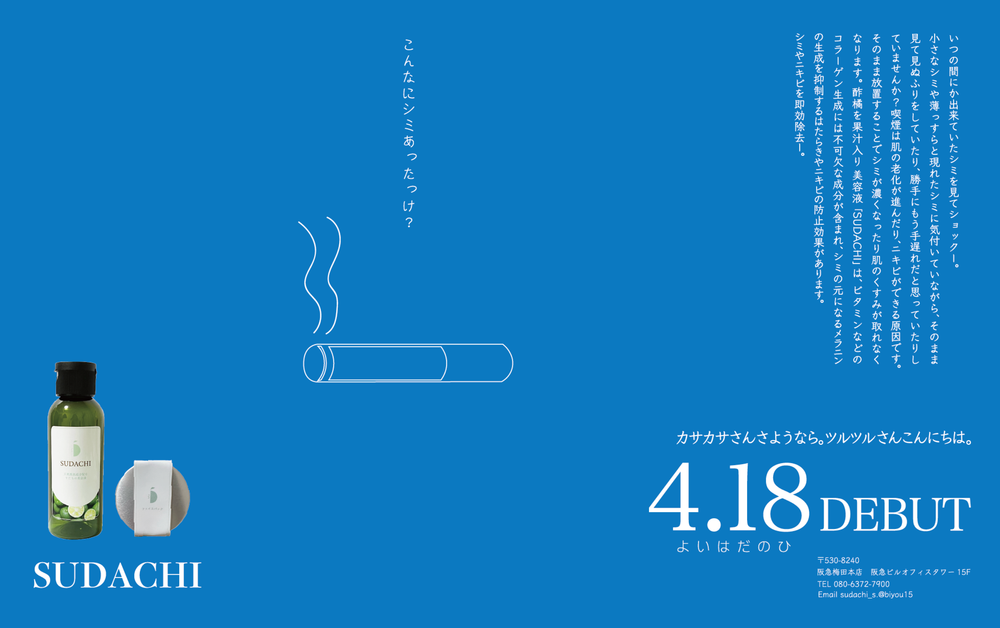
06
Website Design
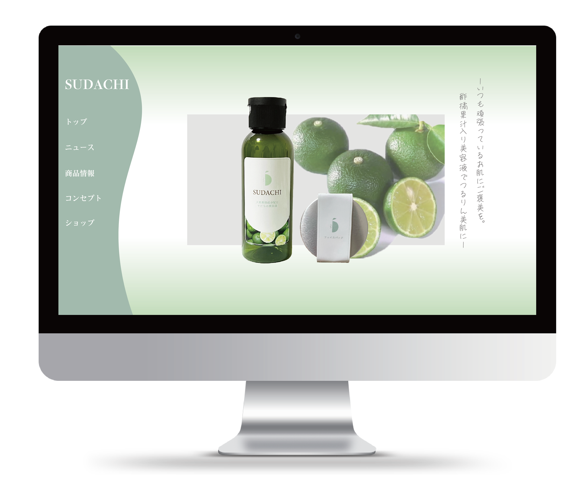